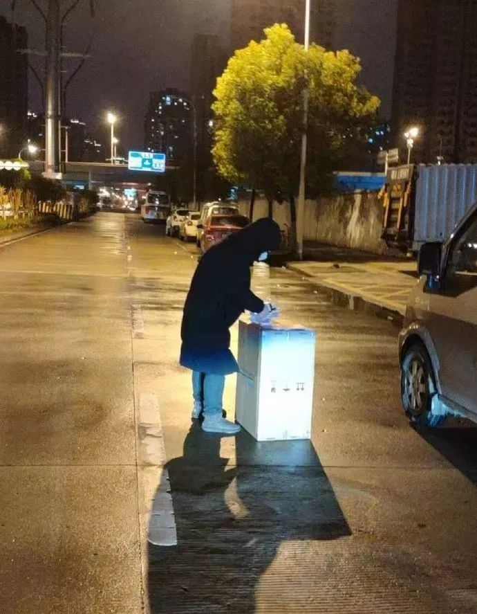
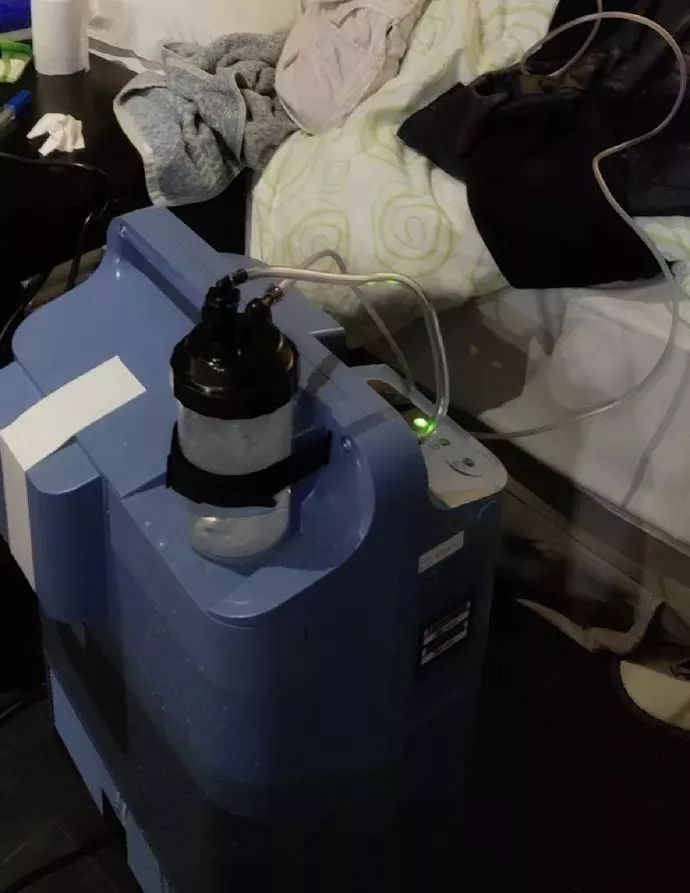
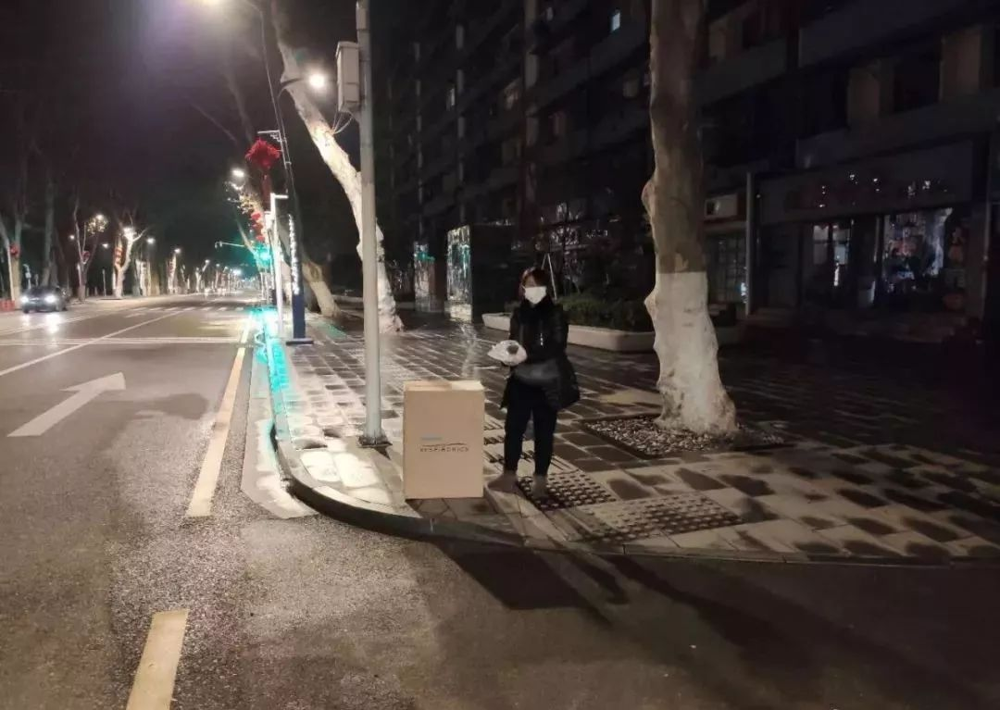

患者的心理问题也要被重视
原文链接 备份链接 如今在武汉，有很多家庭需要进行居家隔离。在这漫长的十多天里，他们并非一座孤岛，很多志愿者和社工为他们提供了不少的帮助。 “好多亲友在封城前就劝我们离开，但作为专业社工，我们该留下来做些什么。”陈兰兰是武汉市逸飞社会工作 …
记者/颜星悦 实习记者/陈威敬**
**
编辑/计巍 宋建华

志愿者通过无接触方式给患者配送制氧机
这是一个每日在线咨询约200人次，由50多个微信群组成的“问诊”新冠肺炎的“线上医院”。
它并不是真正的医院，更贴切地说，它是一种支援。NCP（新冠）生命支援团队（以下简称NCP生命支援）由一群医生及公益人自愿发起，通过网络招募具备临床执业资格、社工和心理学背景的志愿者加入，以网络协作的形式，为新冠肺炎患者及家属提供身心健康恢复支持。目前已有600多人加入。
“线上医疗救援其实是很有限制的。”这是NCP生命支援的发起人郝南和团队中的志愿者都十分清楚的一点。他们要在这个基础上开展救援。
*眼下，NCP生命支援正在想办法将募集到的一批制氧机送到武汉和湖北等地的医疗点和患者家中。*对于无法入院的处于缺氧状态的新冠肺炎患者而言，氧气意味着生的希望。*但由于缺少司机，配送困难，目前仍有数百台制氧机无法送出。*

NCP生命支援发起者郝南

“有限”的救助，能帮一个是一个
“1月22号有报道出现无症状的感染者，网络上渐渐地涌出很多住不进医院的帖子，医疗资源紧张到极点。”曾经的从医经历，以及从事民间救援近十年的经验，使郝南察觉到这次疫情的严重。大年三十晚上，他在微博上发布了NCP生命支援的招募贴：
“我们是一群自发汇集、希望支援武汉及周边可能罹患新型冠状病毒肺炎的患者及家属的网络志愿者。现在我们正在搜集无法获得足够医疗支持的患者求助，并试图与ta们取得联系，支持ta们居家自助互助，对接合适的医疗资源……”
一天之内，郝南收到了2000多份报名表，其中有医学背景的报名者200个。经过初步筛选，25名具有临床经验的医生成为NCP生命支援最初的志愿者。
北京民航总医院急诊科医生阿力也在当天加入NCP生命支援，成为团队中的“协调者”，“我是一个急诊科医生，我想去帮着解答一点问题，能帮一个是一个。”
目前，NCP生命支援每日在线咨询约200人次。在接触患者的过程中，他们发现，情况比想象中的要严重。
进入这间“线上医院”的患者依照病情的轻重，被安排在不同的病患群里。
对于轻症患者，他们采取两方面救助，一方面是医疗咨询，医生阿力会要求患者把自己的CT结果、体温、血氧等数据报告在群里，“ 但线上医疗救援其实是很有限制的，药方我们是不能够开的，我们不是患者的主治医生。再一来，患者跟我们反映说现在根本买不到药，或者买到了也没人配送。我们主要是根据患者现有的一些基础的药物来做判断，吃哪一种或者哪几种来缓解并发症。”
另一方面是缓解焦虑，有一些患者CT显示肺部发炎症状并不严重，血检化验也正常，主要症状是咳嗽，“有些其实可能只是普通的肺炎或者感冒患者，但是身处武汉，这时候他们的心理很焦虑。我们跟踪他们的病情，比如说有患者发烧37度6，这时候他说要不要去医院？我就建议先睡一觉，第二天可能就好了。比如有时候来咨询的人说他喘不上气儿，这时候我再问他，你在玩手机的时候能喘上气不？他想一想就说好像是可以的。”
“方舱医院”投入使用后，轻症患者问询的数量减少了三分之一。由于方舱医院和酒店隔离点的医护力量紧缺，仍会有患者会向阿力报告自己的身体情况，询问办法。
“重症患者的需求只有一个，就是住院。”郝南说。很多重症患者在有机会住院前经历着漫长的等待。对于每一个进入“线上医院”的重症患者，NCP生命支援需要至少三个志愿者同时参与救助。
首先，需要一个医生志愿者时刻联系着重症患者的亲属，冷静地帮助患者思考，指导亲属们怎样保持患者的意识和生命体征。“有一个重症患者的女儿在街上买药，但是她不知道在哪里买，在街上碰运气，这时候我告诉她：你必须要回家陪在患者身边，买药这种事可以交给亲戚朋友。等她回去一看，老人已经自我放弃，连氧气管都拔了。要再晚回去一点的话，就救不了了。”郝南说。
在医生指导家属照护重症患者的同时，NCP生命支援还会派出一个志愿者帮重症患者联系社区，经验丰富的志愿者比病患家属更清楚武汉市卫健委的社区网格操作。志愿者通过患者的地址判断其所在的小区，在里边找到社区的人，再找到社区医院的联系方式。
此外，还需要一个志愿者同步帮助拨打120，“120是很难打通的，这时候需要反复打。” 有时候患者打通了120，也不知道怎样表达症状和需求，这时候志愿者告诉家属们应该怎样有效率地沟通，避免错失机会。
NCP生命支援采用网络协作的形式进行志愿服务
一边安抚情绪，一边判断谁更着急
阿力认为，人手不够是目前NCP生命支援的最大难题。
呼吸科的医生格外短缺。在阿力协调管理的十八个病患群中，“重症群”有四五个，其中的患者大多数都存在呼吸系统上的症状，按照医患数量配比，每个群里至少得有5个呼吸科医生。但是团队里一共只有16个呼吸科医生，甚至每个群一个都难以满足。
“人员最紧张的时候，有个群里面只有我们两个大夫，要面对接近50个患者的咨询，忙不过来，我们只有一边安抚情绪，一边来判断谁更着急，然后优先去回答病情最重的患者。”阿力说。
团队里的医生都是一线工作者，一些主任、副主任医师，本身有很重的工作任务，只能利用有限的休息时间来服务，阿力一直在思考怎么能让更多的医生加入进来，“因为患者的数据现在越来越多，压力特别大。”
在阿力看来，心理医生是NCP生命支援的另一个大缺口，“我们联系一些患者的时候，发现他是绝望的，他会跟我们哭诉20多分钟，我们试图给他提供帮助的时候，他的态度很消极，说没用了，什么都晚了。”
面对这种有心理创伤的患者，阿力觉得很无力，一个急诊科大夫看得懂CT，读得懂数据，却说不出安慰的话。“我们很希望有专业的心理团队去支援他们，武汉人民甚至湖北人民心灵的创伤是很严重的。”阿力说。
阿力的一天都在围着“网络医院”中的患者转，一台电脑，一部手机，频繁地切换于各个患者群。“1月31号我回到北京，要隔离一周，我就被隔离在我们医院的病房里，这段时间我全力投入于志愿者的服务中。”
群里的患者数目每日以百为单位增长，从2月3日开始，阿力忙到一天只吃一顿饭。早上8点，阿力醒来后会喝一袋牛奶，便开始给志愿者们分配任务，然后把新加入群的患者进行“分诊”，放入不同的病患群。中午饭过后，他全力投入到患者的病情中，并协调物资组的资源，尽量帮病患解决问题。
送达患者的第一台制氧机，正在为一名老人辅助供氧
帮患者打通120，是今天最温暖的事
忙碌的日常中，还有一群“小天使”在支持着阿力和NCP生命支援团队。
“我特别想感谢一些大四大五的医学生，他们来自全国各地，加入到我们群体里，每天在网上寻找需要帮助的病患，然后打电话过去问询。”阿力说。
阿力管这些医学生叫做“小天使”，由于没有临床经验，“小天使”们不能参加到医疗帮助，但却是患者在求助过程中接触到的第一个人。“小天使”联系上病患之后，记录下患者报上来的呼吸、心跳、血氧、血压和体温数据，根据自己在学校学到的专业知识，做初步的判断，并将整理出的“病例”转交给群里专业的医生。
“但是有一些患者在他们打电话过去的时候就已经去世了，这些都是二十出头的姑娘小伙，很多都是第一次面对生死，压力也特别的大。”阿力说。
像这样的“小天使”共有近100个，这个数据是不稳定的，有些学生工作了几天，承受不住来自患者的压力，就会选择离开。有“小天使”告诉阿力，“好像我学了医也没办法帮到他们很多。”
为了不让“小天使”们失去对医学的热情，阿力医生每天睡前会让“小天使”们汇报一下：今天有没有什么让你感到温暖的事情？
“ 今天得到确诊的病人比昨天多了！”
“ 我打了五个电话，其中三个患者现在已经住进医院了。”
“ 今天帮助一个患者打通了120！”
阿力医生觉得，只要大家在一起打打气，总能坚持下去。

在“无接触”送达供氧机时，志愿者远远地隔着口罩大声喊：你要坚强，会好起来的
“你能帮帮他吗？”
有个名叫“婷”的20岁左右的姑娘，让阿力印象深刻。
2月2日早上10点，阿力在微博上看到婷的求助信息：奶奶的病情很不好，还没有住院。阿力私信问她：需不需要帮助？婷当时回复“需要”，并加了阿力的微信。
婷对阿力说：“本以为都是假的，我通过好多渠道发了求助信息，您是第一位与我有联系的，非常感谢！”
当天下午4点，婷再次联系阿力，但奶奶已经走了。她向阿力哭诉，遗体很快就要被拉到殡仪馆，立刻火化，不能够送葬，骨灰也要等到疫情全部结束后才能去处理。
阿力安慰她：“ 发生了这么多事，你如果愿意，可以用文字记录下来，不管是悲伤还是无助，这有助于你平复心情。” 婷听了之后，紧接着问阿力：“ 我能不能去加入志愿者？希望不要有更多的家庭像我们这样。”
虽然婷不符合志愿者的招聘要求，没有加入到组织中，但是当她每次看到网上有人求助，就会把信息转发给阿力，说“你能帮帮他吗？”
受到过帮助的患者经常会把新患者拉进NCP生命支援群，郝南介绍，NCP生命支援已经形成8个部门，是一个有“一线门诊”、“二线病房”、“三线监护室”等50多个微信群组成的“线上医院”。

**NCP生命支援制作的无接触发放流程**
制氧机的最后一公里
除了线上医疗咨询服务，NCP生命支持团队还在为患者们寻找医疗物资。截止2月11日13:00，NCP生命支援通过公益渠道募集了1945台制氧机，其中1292台已经发往医疗点，56台发给了患者家属。
有需求的患者们只需要在网上填写表格，通过医生的审核之后，便可以申请制氧机配送到家的服务。
“目前制氧机是充足的，困难在于配送。我们本来是打算让社区帮忙转交，但社区工作也近乎饱和，所以只有我们自己找车队配送了。” 郝南说。
考虑到已经有志愿者感染的先例，执行团队希望尽量减少患者、家属、志愿者司机碰面的机会，他研究出一个“无接触派送方法”：
1、装载着制氧机的车辆到达患者小区，拨通患者电话，并将制氧机放在地面上，距离25米等待患者下楼收货。
2、患者到达小区门口，举着接收单，挥一挥手向司机示意。
3、司机拍摄患者举着接收单的照片，表示患者配送完成。
尽管有这样谨慎的派送方法，由于要前往重症患者的小区，愿意参与配送的司机很有限，这是摆在郝南面前的一大难题，“我真的尽了最大的努力，在本地的志愿者网络里发动人去找，我都找了个遍，也不断地跟司机重复我们的派送方法，目前只有民间救援队的三五个司机在帮忙，所以一天只能发出不到20个。”
NCP生命支援在“售后服务”上会继续对接患者。在患者接收到制氧机之后，一个“小天使”志愿者会在线上一对一地指导患者或者家属怎么去使用机器，并交待使用过程以及消毒的注意事项。
这些制氧机给仍在家中的患者带来了希望，“我们有一个患者前天晚上的氧气用完了，如果昨天制氧机没到的话，昨晚可能就很难熬过去了，现在他用了两天，已经能自己下地看电视了。”郝南说。
由于配送困难，仍有几台制氧机没能派出，NCP生命支援希望借助深一度平台招募一些湖北境内的司机，以下是联系方式。

（应受访者要求，文中阿力为化名）
【反侵权公告】本文由北京青年报与今日头条联合出品，未经授权，不得转载。


送别李文亮医生：愿天堂没有病毒| 深度报道

鄂A牌车30小时归乡记 | 深度报道

一个武汉红十字会志愿者的自述 | 深度报道


原文链接 备份链接 如今在武汉，有很多家庭需要进行居家隔离。在这漫长的十多天里，他们并非一座孤岛，很多志愿者和社工为他们提供了不少的帮助。 “好多亲友在封城前就劝我们离开，但作为专业社工，我们该留下来做些什么。”陈兰兰是武汉市逸飞社会工作 …
原文链接 备份链接 新冠疫情期间，居家隔离的疑似患者，和非新冠肺炎患者，都需要诊疗服务，但去医院有交叉感染风险。 于是在线问诊需求暴增。好大夫创始人王航估计，目前“线上每天能服务12万人”。 黑龙江、武汉、上海等地多家公立医院迅速开 …
原文链接 备份链接 文：蔡星卓 “每个人都在拼尽全力呼吸。” 刚开始是发热和咳嗽，接着是明确的呼吸困难，用赵一波的话说，病毒让肺像肿了一样，进而使肺失去了呼吸的功能。有的病人带着面罩，有的病人带着氧气管，有的病人插着 …
原文链接 备份链接 记者/ 魏晓涵 梁婷 韩谦 佟晓宇 实习记者/ 陈威敬 胡琪琛 编辑/杨宝璐 宋建华 医护人员严阵以待 摄影/高瞾 2019年12月30日，武汉市卫计委内部文件流出，称“武汉出现不明原因的肺炎”，与华南海鲜批发市场有 …
原文链接 备份链接 编者按：上海市第一人民医院呼吸科的谢国钢医生，2月1日报名了支援上海公共卫生临床中心医疗队。清晨5点，值班的他接到了报到的电话通知，连家都来不及回，就匆匆奔赴了“战场”。要知道，谢国钢医生12月份才刚刚结束为期半年的援 …